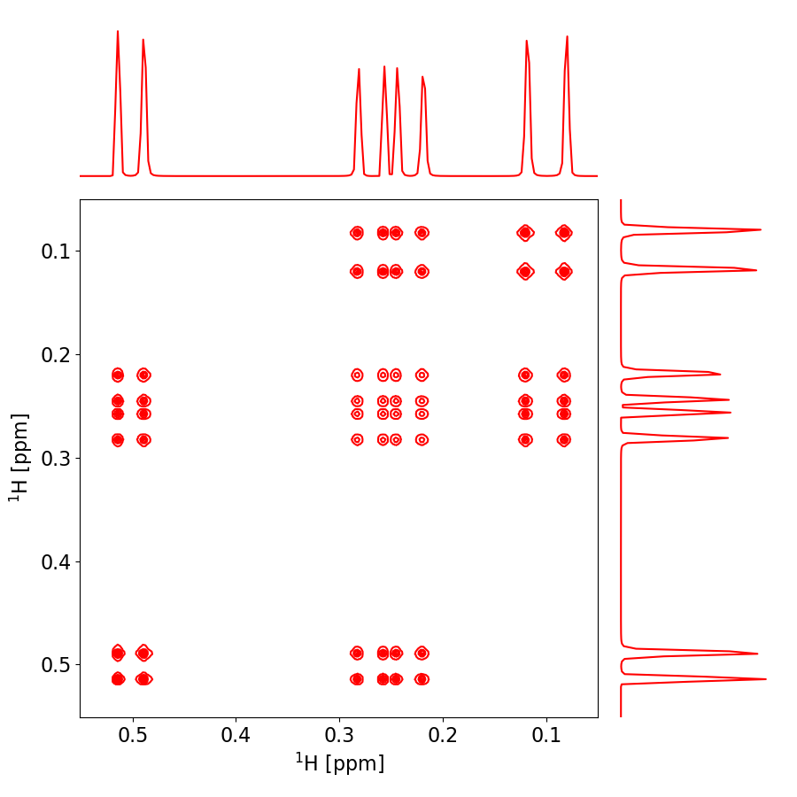

Note
Click here to download the full example code
pygamma cosy¶
An example of simulating a 2D cosy experiment using pygamma. The example is translated from the original C++ code and the 2D plot is displayed in absolute mode
Out:
C:\Users\ERIC\Documents\pygamma_gallery\docsource\sphinx\examples\pygamma_cosy\plot_cosy1.py:162: UserWarning: This figure includes Axes that are not compatible with tight_layout, so results might be incorrect.
plt.tight_layout()
C:\Users\ERIC\Documents\pygamma_gallery\docsource\sphinx\examples\pygamma_cosy\plot_cosy1.py:241: UserWarning: Matplotlib is currently using agg, which is a non-GUI backend, so cannot show the figure.
plt.show()
#import pygamma
from pygamma import spin_system, Hcs, HJw, Fm, gen_op, sigma_eq, Iypuls, evolve, FID, row_vector
#import nmrglue
import numpy as np
from scipy import fftpack
import matplotlib.pyplot as plt
from matplotlib.ticker import NullFormatter
class TwoD_NMR_MAT_plot:
def __init__(self, exp, pinfo, info, dimensions_ppm=[]):
# print exp.shape
self.exp = exp
self.pinfo = pinfo
self.info = info
self.rr,self.cc = exp.shape
self.X = np.zeros(exp.shape)
self.Y = np.zeros(exp.shape)
# r1=0
# r2=self.rr
#
# c1=0
# c2=self.cc
# print r2,c2
self.create_axes( pinfo, info, self.rr, self.cc, dimensions_ppm )
self.create_plot_layout(self.dimensions_index)
self.plot_plots()
def create_axes( self, pinfo, info, rr,cc, dimensions_ppm):
self.f1_offset_p = pinfo['procs' ]['OFFSET']
self.f1_sw_hz = pinfo['procs' ]['SW_p']
self.f1_omega = pinfo['procs' ]['SF']
self.f1_sw_ppm = self.f1_sw_hz/self.f1_omega
self.f2_offset_p = pinfo['proc2s' ]['OFFSET']
self.f2_sw_hz = pinfo['proc2s' ]['SW_p']
self.f2_omega = pinfo['proc2s' ]['SF']
self.f2_sw_ppm = self.f2_sw_hz/self.f2_omega
# print self.f1_sw_ppm
self.f1 = np.linspace(self.f1_offset_p, self.f1_offset_p-self.f1_sw_ppm, self.rr)
self.f2 = np.linspace(self.f2_offset_p, self.f2_offset_p-self.f2_sw_ppm, self.cc)
self.dw_f1_ppm = self.f1[1]-self.f1[0]
self.dw_f2_ppm = self.f2[1]-self.f2[0]
for r in range(self.rr):
for c in range( self.cc):
self.Y[r,c] = self.f1[r]
self.X[r,c] = self.f2[c]
# print dimensions_ppm
if dimensions_ppm == []:
self.dimensions_index = np.array([0,self.rr-1,0,self.cc-1])
else:
r1 = int( (dimensions_ppm[1]-self.f1_offset_p)/self.dw_f1_ppm)
r2 = int( (dimensions_ppm[0]-self.f1_offset_p)/self.dw_f1_ppm)
c1 = int( (dimensions_ppm[2]-self.f2_offset_p)/self.dw_f2_ppm)
c2 = int( (dimensions_ppm[3]-self.f2_offset_p)/self.dw_f2_ppm)
self.dimensions_index = np.array([r1,r2,c1,c2 ])
# print "self.dimensions_index", self.dimensions_index
self.Z1 = self.exp[self.dimensions_index[0]:self.dimensions_index[1],self.dimensions_index[2]:self.dimensions_index[3]]
self.X1 = self.X[self.dimensions_index[0]:self.dimensions_index[1],self.dimensions_index[2]:self.dimensions_index[3]]
self.Y1 = self.Y[self.dimensions_index[0]:self.dimensions_index[1],self.dimensions_index[2]:self.dimensions_index[3]]
def create_plot_layout( self, dimensions_index):
# print "dimensions_index",dimensions_index
nullfmt = NullFormatter() # no labels
# definitions for the axes
left, width = 0.1, 0.65
bottom, height = 0.1, 0.65
bottom_h = left_h = left+width+0.02
rect_scatter = [left, bottom, width, height]
rect_histx = [left, bottom_h, width, 0.2]
rect_histy = [left_h, bottom, 0.2, height]
# start with a rectangular Figure
plt.figure(2, figsize=(9,9))
self.axScatter = plt.axes(rect_scatter)
self.axHistx = plt.axes(rect_histx)
self.axHisty = plt.axes(rect_histy)
# no labels
self.axHistx.xaxis.set_major_formatter(nullfmt)
self.axHisty.yaxis.set_major_formatter(nullfmt)
self.axScatter.tick_params(axis='x', labelsize=16)
self.axScatter.tick_params(axis='y', labelsize=16)
self.axScatter.set_xlabel('${^1}$H [ppm]',fontsize=16)
#ax.set_xlim(-60, 60)
self.axScatter.set_ylabel('${^1}$H [ppm]', fontsize=16)
self.axHistx.axis('off')
self.axHisty.axis('off')
f1_start = self.f1[dimensions_index[0]]
f1_end = self.f1[dimensions_index[1]]
f2_start = self.f2[dimensions_index[2]]
f2_end = self.f2[dimensions_index[3]]
self.axScatter.set_ylim( (f1_start, f1_end) )
self.axScatter.set_xlim( (f2_start, f2_end) )
def plot_plots(self):
# the scatter plot:
cl = np.linspace(self.Z1.max()*0.01, self.Z1.max()*1.1,10)
# print "Z1.shape",self.Z1.shape
sum_f1 = self.Z1.sum(axis=0)
# print "len(sum_f1)",len(sum_f1)
sum_f2 = self.Z1.sum(axis=1)
# print "len(sum_f2)",len(sum_f2)
cset = self.axScatter.contour(self.X1, self.Y1, self.Z1, cl, colors='red')
#
self.axHistx.plot(sum_f1, 'r-')
self.axHisty.plot(sum_f2,range(len(sum_f2)),'r')
self.axHistx.set_xlim( (0,len(sum_f1)-1) )
self.axHisty.set_ylim( (0,len(sum_f2)-1) )
plt.tight_layout()
if __name__ == "__main__":
# DEFINE SYSTEM & NMR PARAMETERS
dt1 = 0.001 # t1 time increment
dt2 = 0.001 # t2 time increment
t1pts = 1024 # points on t1 axis
t2pts = 1024 # points on t2 axis
# Read in spin system for cosy experiment
sys=spin_system() # define the system, read in
sys.read("cosy1.sys") # from disk
# set up some neccessary variables
tmp = row_vector(t2pts) #block_1D tmp(t2pts); // 1D-data block storage
data = np.zeros((t1pts,t2pts), dtype=np.complex128) #block_2D data(t1pts,t2pts); // 2D-data matrix storage
H = Hcs(sys)+ HJw(sys) # // Hamiltonian, weak coupling
detect = gen_op(Fm(sys)) # // F- for detection operator
# APPLY PULSE SEQUENCE
sigma0 = sigma_eq(sys) # equilibrium density matrix
sigma1 = Iypuls(sys, sigma0, 90) # apply first 90 y-pulse
for t1 in range(t1pts):
sigma=evolve(sigma1, H, t1*dt1) # evolution during t1
sigma=Iypuls(sys, sigma, 90) # apply second 90 y-pulse
FID(sigma,detect,H,dt2,t2pts,tmp) # acquisition
data[t1] = tmp.toNParray() # save FID
# Apply QSIN processing in both dimensions, 2D-FFT and display in absolute mode
ph1 = np.pi/1.
aq = 1./dt2
ttt = np.arange(t2pts)/aq
qsin = (np.sin((2.0*np.pi-ph1)*ttt+ph1))**2
ddd1 = qsin*data
fid = fftpack.fft(ddd1, axis=1)
fid = fftpack.fftshift(fid, axes=1)
fid = qsin*(fid.transpose())
spec = fftpack.fft(fid, axis=1)
spec = fftpack.fftshift(spec, axes=1)
absSpec = abs(spec)
absSpec = np.fliplr(absSpec) # flip spectrum up down and left to right to obtain correct Bruker configuration
absSpec = np.flipud(absSpec)
# Plot in ppm making use of NMRGLUE python package
info = {}
pinfo = {}
pinfo['procs']={}
pinfo['proc2s']={}
pinfo['procs']['OFFSET']=1.25
pinfo['procs' ]['SW_p']=1.0/dt1
pinfo['procs' ]['SF']=sys.spectrometer_frequency()
pinfo['proc2s' ]['OFFSET'] =1.25
pinfo['proc2s' ]['SW_p']=1.0/dt2
pinfo['proc2s' ]['SF']=sys.spectrometer_frequency()
ppplot = TwoD_NMR_MAT_plot(absSpec, pinfo, info, [0.05,0.55, 0.55,0.05] )
plt.show()
Total running time of the script: ( 0 minutes 1.424 seconds)